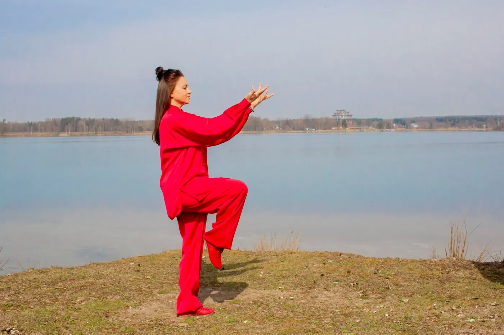
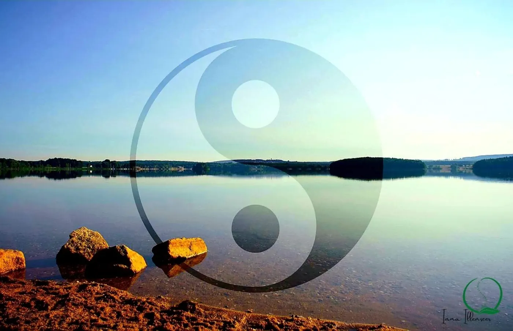
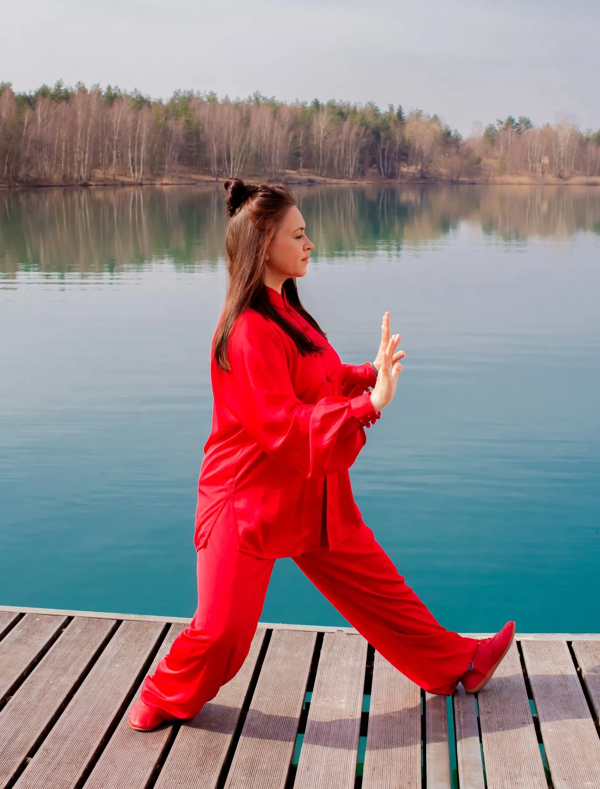
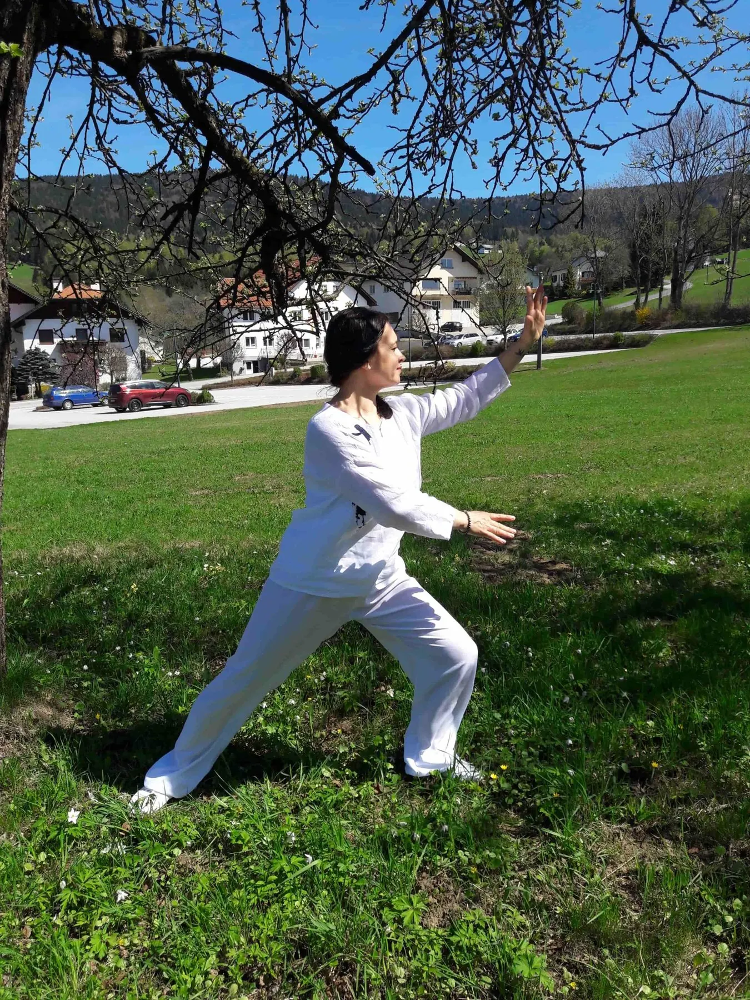

Ich bin Inna.TCM · Lebenspflege in Steinberg am See
Mutter von drei erwachsenen Kindern, Ehefrau eines wunderbaren Mannes — und heute, in meinen 50ern, bei mir selbst angekommen. Ausgeglichener, klarer, bewusster. Und mit meiner Lebensfreude und meinem Humor, denn das Leben darf bei aller Ernsthaftigkeit auch leicht sein.

Das war nicht immer so.
Ich bin zertifizierte Gesundheitspraktikerin, leidenschaftliche Qigong-Lehrerin, diplomierte TCM-Ernährungsexpertin, TuiNa-Praktikerin und zertifizierte Organetikerin. Mein Weg dorthin hat viel mit meiner eigenen Geschichte zu tun: Es gab Zeiten, in denen es mir gesundheitlich selbst nicht gut ging. Gerade diese Erfahrungen haben in mir den Wunsch geweckt, Zusammenhänge besser zu verstehen — und herauszufinden, was wir selbst für unsere Gesundheit und unser Wohlbefinden tun können.
So begann ein Weg, der mich Schritt für Schritt zu Qigong und immer tiefer in die Traditionelle Chinesische Medizin führte. Seit 2010 beschäftige ich mich intensiv mit der TCM. Besonders in meiner Qigong-Ausbildung habe ich selbst erfahren, wie viel regelmäßige Bewegung, bewusste Atmung und Konzentration verändern können: mehr Ruhe und Ausgeglichenheit, aber auch körperliche Kraft, Stabilität und Ausdauer.
Diese Erfahrungen haben meine Neugier geweckt. Es folgten Aus- und Weiterbildungen in TCM, Ernährung, Qigong und Körperarbeit. Heute verbinde ich dieses Wissen mit meiner persönlichen Erfahrung und begleite Menschen auf ihrem eigenen Weg zu mehr Wohlbefinden, Balance und Lebensenergie. Meine Schwerpunkte sind TCM-Frauengesundheit, Hormonelle Frauengesundheit, Wechseljahre, Stressregulation, Schlafgesundheit und Stoffwechsel.
„Wenn du die Absicht hast, dich zu erneuern, tu es jeden Tag.“ — Konfuzius
Vier Dinge, auf die du dich verlassen kannst.
Persönlich
Erst wenn ich dich und deine Geschichte kenne, weiß ich, was zu dir passt.
Ganzheitlich
Körper, Geist und Seele — die TCM sieht den Menschen als Ganzes, nicht nur einen Ausschnitt.
Ehrlich
Was ich anbiete, ist Lebenspflege. Keine Heilversprechen, keine Diagnosen.
Geduldig
Kleine Schritte, regelmäßig geübt, tragen weiter als große Vorsätze.
Was ich gelernt habe.
Und woran ich dranbleibe.
Lotus an der Wand, Ruhe im Raum.
Innas Räume in Steinberg am See. Kurse im Mehrgenerationenhaus Wackersdorf, beides gut erreichbar aus Schwandorf und Umgebung.





Lern mich kennen.
Ein kurzes Gespräch, ein Kurs zum Ausprobieren — so fängt es meistens an.
Kurz sagen, worum es dir geht — Kurs, Ernährung oder eine Anwendung.
Ein persönliches Gespräch: Wo stehst du, was wünschst du dir?
Kurs, Termin oder Ernährungsgespräch — Schritt für Schritt, in deinem Tempo.
Oder direkt anrufen: 0151 42548212